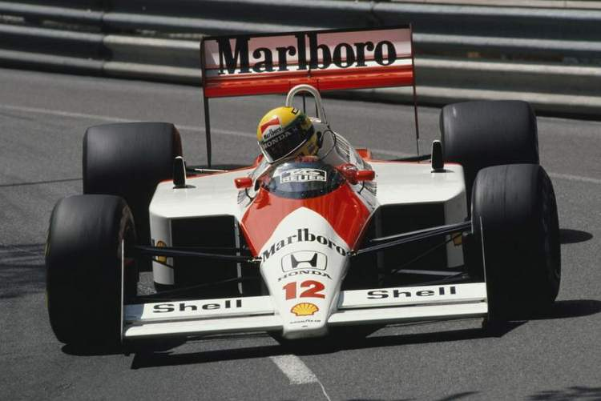

1. Senna – Gran Premio de Mónaco en 1988

Ayrton Senna tiene el récord con seis victorias en la F1 de Mónaco, incluidas cinco consecutivas de 1989 a 1993. Desde diez aperturas, terminó en el podio ocho veces. La victoria en el campeonato de Sennana en 1987 marcó la primera vez que un auto de F1 ganó un Gran Premio con suspensión activa. Senna hizo su debut en Mónaco en 1984 cuando la mayoría de los fanáticos no tenían idea de quién era. Sin embargo, en 1988, Ayrton Senna se había establecido como uno de los nombres más grandes en la Fórmula 1. Su espectacular vuelta en la pole-position en el Gran Premio de Mónaco de 1988 ha caído en la historia de la F1.